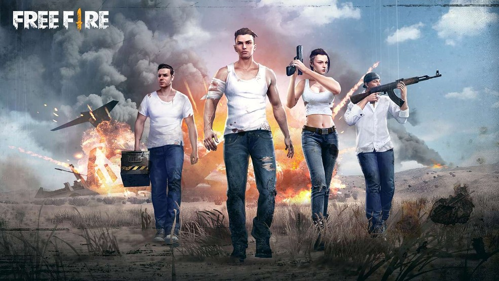

Links:Sobre:ArmasPersonagens Imagens Redes Socias:FecebookYouTube Minhas Redes Socias:Fecebook:@joão VictorInstagram:@joaovictur_aquino |
Tudo Sobre o Jogo:Sobre:Garena Free Fire (também conhecido como Free Fire Battlegrounds ou somente Free Fire) é um jogo eletrônico mobile de ação-aventura do gênero battle royale, desenvolvido pela 111dots Studio e publicado pela Garena.O jogo obteve um beta aberto em novembro de 2017 e foi lançado oficialmente para Android e iOS em 4 de dezembro de 2017. O jogo consiste de até no total de cinquenta jogadores que caem de paraquedas em uma ilha em busca de armas e equipamentos a fim de matar os outros jogadores. Os jogadores escolhem à vontade a posição inicial, pegam armas e suprimentos para aumentar o tempo de vida na batalha.Recpção:Em sua revisão feita para o website asiático Game Prime, Muhammad Syahrir comentou sobre os controles do jogo dizendo: "Se [você] não estiver familiarizado com esses tipos de controles, existe uma grande possibilidade de você entrar em pânico. [...] Mas não se preocupe, você se acostumará rapidamente com o passar do tempo."Em questão dos gráficos, ele disse que apesar de serem "vitais para alguns jogadores", ele observou que isso "tem um benefício para celulares de média e baixa especificação" e concluiu sua revisão dizendo: "Se jogos com bons gráficos são sua praia, então não recomendamos que você jogue Free Fire Battlegrounds. Mas se você gosta de jogos battle royale e quer se divertir com seus amigos, você deve definitivamente jogar. Fazendo uma comparação com Rules of Survival (outro jogo mobile do mesmo gênero), Tais Carvalho do TechTudo, comentou que Free Fire "prioriza o desempenho, sendo uma ótima escolha para qualquer tipo de aparelho. O gameplay se destaca e tem conteúdo suficiente para entreter e oferecer combates gratificantes." Em relação à progressão de personagens e habilidades, ela disse que é "um adicional chamativo". |